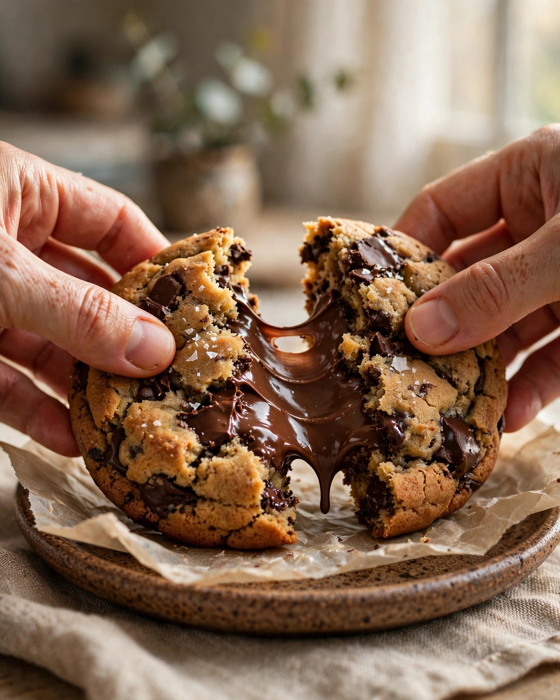
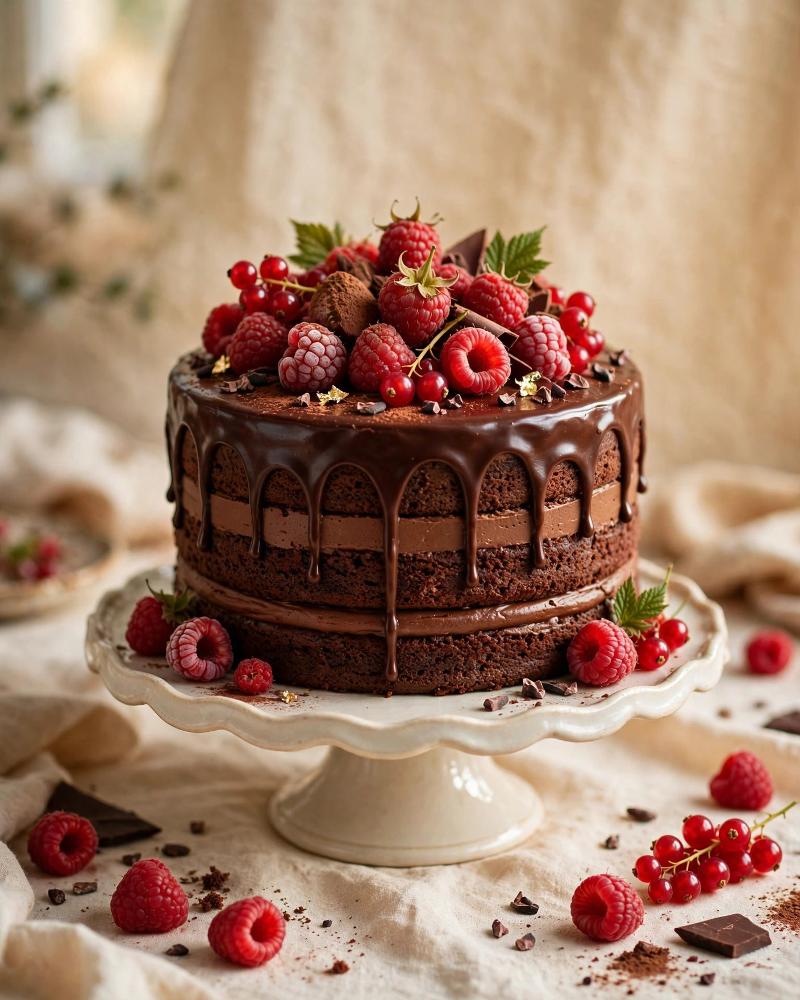
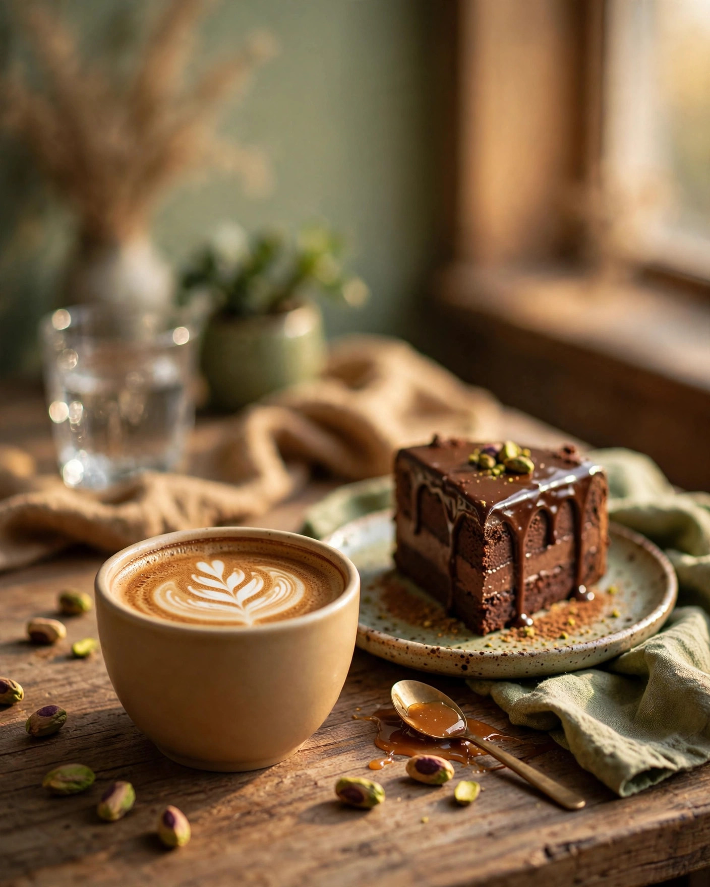

Feed harmonioso
Grade equilibrada intercalando closes de texturas de chocolate, peças inteiras e retratos do ateliê.
Ensaio gastronômico conceito
Como a fotografia certa desperta o apetite em 3 segundos e valoriza o trabalho artesanal do ateliê. Todas as fotos desta página são amostras geradas por IA — uma demonstração do ensaio fotográfico com IA que o Content Engine produz para a CAMIS.
Todas as imagens desta página: amostras geradas por IA
Comparativo de impacto visual
Arraste o slider para comparar. O lado esquerdo simula uma foto comum de celular (iluminação plana, cores opacas — efeito ilustrativo aplicado sobre a mesma imagem); o lado direito é a amostra editorial gerada por IA.

Foto comum de celular — simulaçãoDemonstração de conceito: a foto "antes" é a mesma imagem com filtro ilustrativo. O ensaio real com IA produz cada foto sob medida para o produto.
Galeria full-bleed
Cada clique foi desenhado para transmitir aromas, cremosidade e a temperatura acolhedora do ateliê.
Ideal para reels de desejo e posts de carrossel, capturando o momento do corte do cookie.
Amostra gerada por IA — uso: post de terça-feira.

Perfeito para o catálogo de aniversários e celebrações. A luz destaca o brilho da ganache.
Amostra gerada por IA — uso: capa de destaque.

Fotografia de convite para o café da tarde e momentos de pausa. Conecta o cliente à atmosfera acolhedora do ateliê.
Amostra gerada por IA — uso: stories de encomenda.

Humanização da marca para os destaques, reels de bastidores e a biografia oficial. O processo é o protagonista.
Amostra gerada por IA — uso: reels de bastidores.
Estratégia de posicionamento
Quatro canais para transformar visitantes casuais em clientes que esperam ansiosamente a próxima fornada.
Grade equilibrada intercalando closes de texturas de chocolate, peças inteiras e retratos do ateliê.
Enquetes interativas ("Qual o seu doce de hoje?"), avisos de fornada e links para o Direct nos horários de pico.
Capas personalizadas organizadas por categorias: "Cookies do dia", "Bolos festivos", "Nosso café".
Campanhas geolocalizadas em Presidente Venceslau e municípios vizinhos para reservas de fins de semana.
Por que a fotografia certa abre o apetite?
Luz suave de manhã realça o dourado da massa assada e o brilho do chocolate — o olho "prova" antes da boca.
Foco seletivo no corte do doce, com o fundo desfocado: a atenção vai direto para o recheio.
Pratos artesanais, papel manteiga e madeira rústica: a foto conta que aquilo foi feito à mão, ali mesmo.